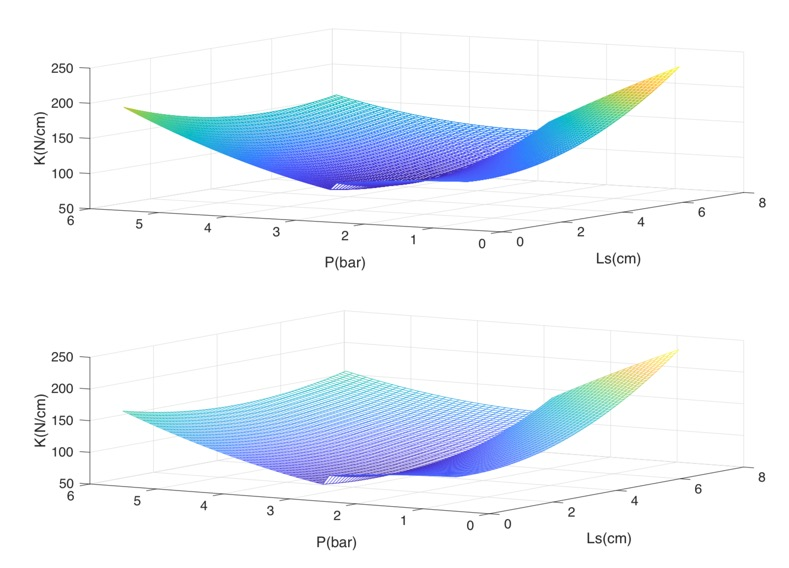

|  | One of my interested research goal is definitely to aim the soft robots inspired by biology system dealt with designing/fabricating, modeling, and controlling. For example, especially, smart soft robots is challenging to integrate a sensor, communication, and controller together. Fortunately, according to my PhD work, pneumatic artificial muscle(PAM) is one of the soft actuator, which is considered compliant actuator and modeled as non-linear actuation system. In terms of control problem, due to high complicated non-linear system, the classical control + fuzzy control is employed to be control approach based on model-free control and information based. |